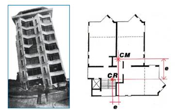
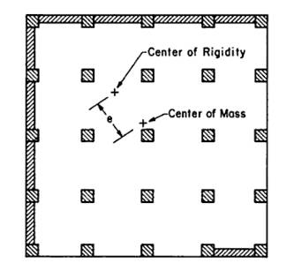
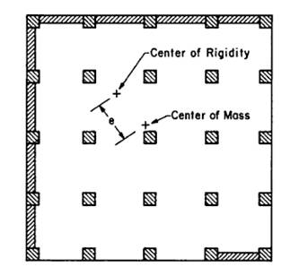

Torsión por excecentricidad [TOR]
Para al menos una dirección (a lo largo del edificio) el centro de rigidez o resistencia está localizado en cualquier parte más allá del punto medio entre el centro de una planta típica y algún borde del edificio.
La torsión es creada cuando el centro de masa (CM) y el centro de rigidez o resistencia (CR) no coinciden en el edificio - la distancia entre estos dos puntos es conocida como excentricidad. CM es usualmente el centro geométrico de la planta. La ubicación de CR depende de las características de los componentes del sistema resistente a cargas laterales (muros a cortante, pórticos resistentes a momento, pórticos arriostrados, etc.). Efectos torsionales pueden desarrollarse sólo en edificios con diafragmas rígidos. También grandes excentricidades puede que no conlleven a irregularidades por torsión si el sistema resistente a cargas laterales perpendicular a la estructura que genera torsión está ampliamente separada y es lo suficientemente resistente.

Cómo se desarrollan efectos torsionales en un edificio (FEMA 454)

Efectos torsionales pueden desarrollarse en un edificios cuya configuración es regular y simétrica, sin embargo componentes estructurales rígidos tales como escaleras o núcleos de ascensores no están alineados con respecto al centro de masa. Esta foto muestra un edificio en Viña del Mar que fue severamente afectado en el terremoto de 1985 Llolleo, Chile. El dibujo muestra la planta del edificio (FEMA 454)

Efectos de torsión se desarrollan en edificios en esquina o edificios con el frente abierto, como los mostrados en la figura (FEMA 454)

Un edificio con el frente abierto (estación de bomberos), Vancouver, Canada (S. Brzev)
 

El colapso del edificio J.C. Penney en el terremoto de 1964 Anchorage, USA se atribuyó a efectos torsionales. Existían muros a cortante a lo largo de la mayoría de las fachadas sur y occidente. No existían muros a cortante en la fachada norte, la cual estaba cubierta por paneles de concreto prefabricado, y existía un muro a cortante parcial en la fachada este. Los efectos torsionales causaron el colapso del muro oriental, y progresivamente el colapso de los muros sur y occidental. La foto muestra la fachada este del edificio luego del terremoto, y el edificio muestra la planta del edificio (Cortesía de NISEE, University of California, Berkeley, and U.S. National Research Council)

Un pórtico de concreto reforzado en construcción dañado en el terremoto de 2005 Kashmir, Pakistan (ver Figura 1). Las columnas de los pisos superiores sufrieron daños severos y desplazamientos permanentes (Figura 3) debido a la disminución de la rigidez en los pisos superiores; esto fue causado por muros de relleno de bloques de concreto en la planta baja. El daño en las columnas fue agravado por la presencia de una escalera rígida en una de las esquinas (ver Figura 1) la cual colapso (ver Figura 3). La escalera causó efectos torsionales en el edificio debido a la excentricidad entre el centro de masa y el de resistencia. (M. Tomazevic)

Un edificio de concreto reforzado fue dañado en el terremoto de 2011 Christchurch, Nueva Zelandia debido a efectos torsionales. El sistema resistente a cargas laterales consistía de muros a cortante de concreto reforzado y un núcleo del ascensor a lo largo de la dirección noroccidental y columnas de concreto reforzado y mampostería en el sur, tal como se muestra en el plano. El daño se presentó en su mayoría en en las columnas de concreto y mampostería reforzada ubicadas en la fachada sur del edificio, tal como se muestra en la foto. (J. Centeno)

Un edificio con una abertura en la planta baja a lo largo de la esquina de la calle y muros a lo largo de las otras fachadas colapsó en el terremoto de 1999 Chi Chi, Taiwan. El edificio se inclinó debido al colapso de las columnas del primer piso, creando una debilidad de torsión aparente (cortesía de NISEE, University of California, Berkeley, photo: J. Moehle)